vika维格表云版本部署文档
免责声明：本文档可能包含第三方产品信息，该信息仅供参考。阿里云对第三方产品的性能、可靠性以及操作可能带来的潜在影响，不做任何暗示或其他形式的承诺。
概述
vika维格表，不是电子表格，是新一代的「数据生产力」平台。您可以使用「vika维格表」来自动化你的项目管理、市场营销、客户管理、财税管理、人事行政等数据整理 与流转。 维格表拥有与电子表格相似的操作页面，能够 0 门槛地快速搭建业务系统及工具，自配业务模块和工作流；通过维格表搭建的业务系统及工具，可以独立应用的同时，数据统一集中在维格表空间站内，实现数据的无缝流转；开放的 API 面板，可对接其他已有业务系统或企业内部数据中台，将数据快速同步到维格表，于一处进行管理、流转，打破数据孤岛。 本文向您介绍如何部署「vika维格表云版本」。
计费说明
「vika维格表云版本」费用如下： 产品价格为 26800元 / 年；ECS实例、网络流量等费用均为标准费用
支持升级
在使用过程中，可以前往控制台选择升级，但是「计算巢免费试用」不支持自助升级。
部署流程
部署步骤
1. 在产品界面选择您想要购买的版本 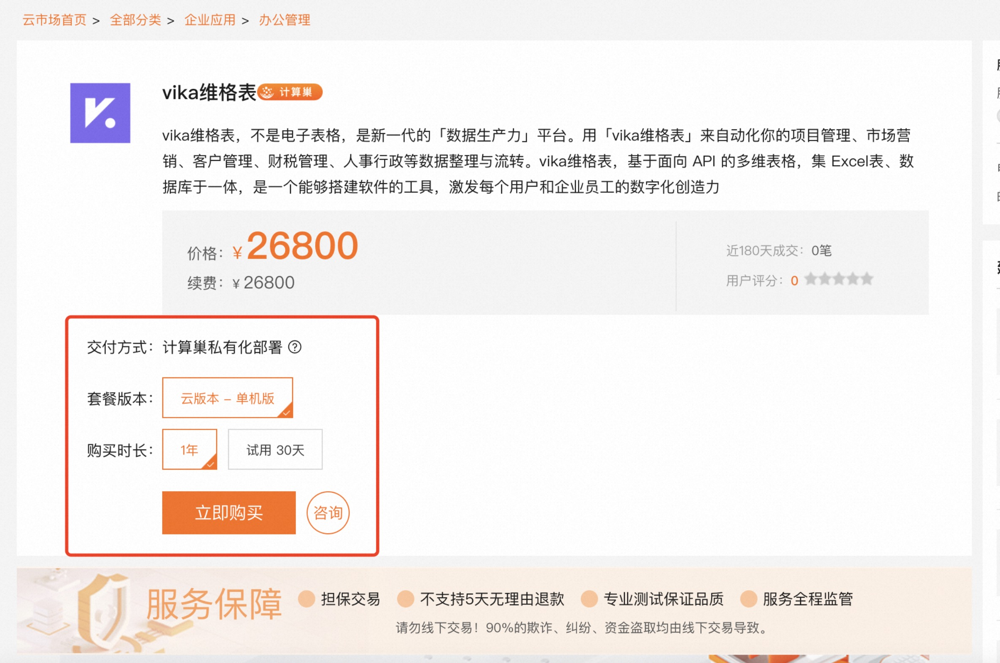
2. 点击立即购买，确认产品信息 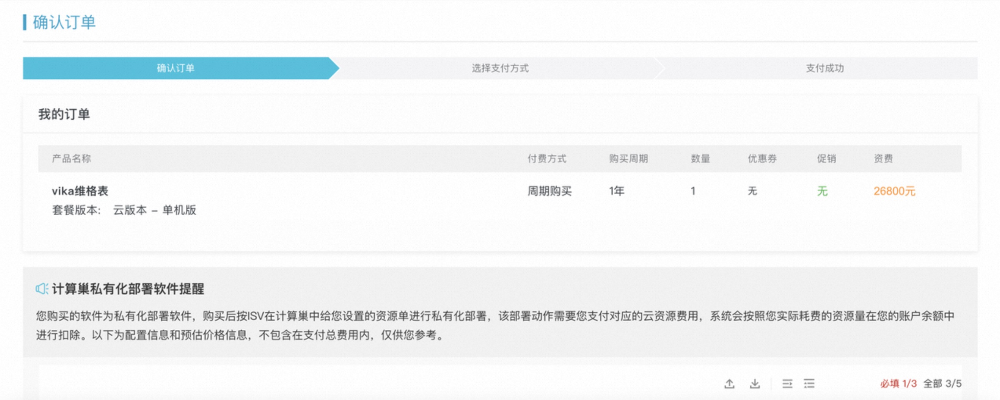
3. 确认服务实例信息 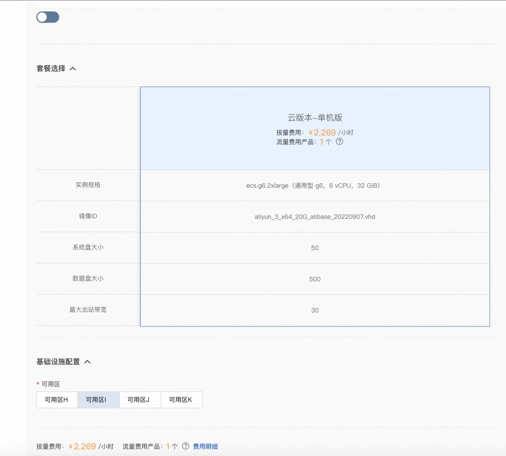
4. 点击确认购买并支付 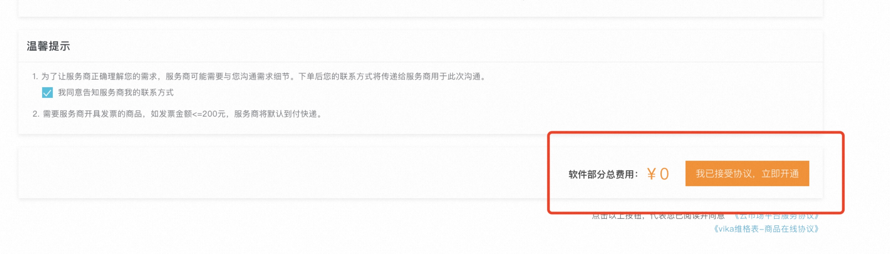
5. 支付完成后，管理控制台 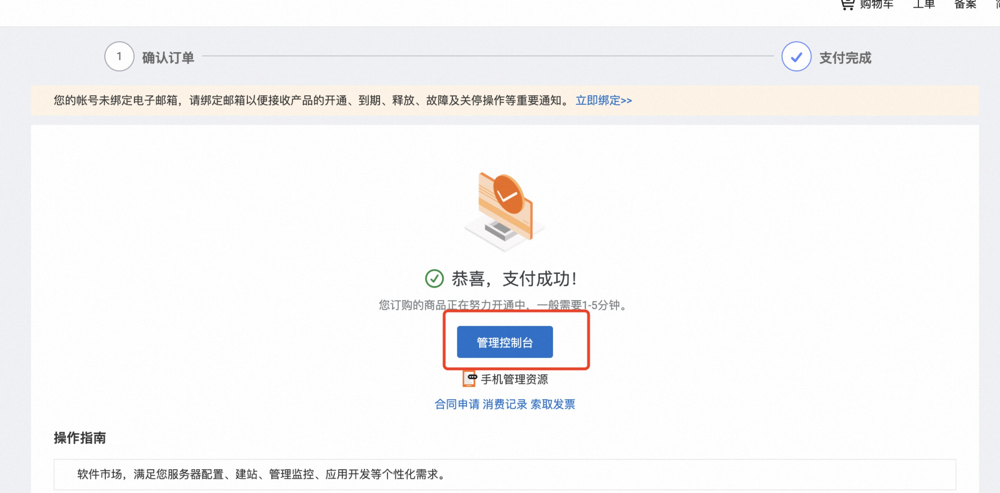
6. 即可在云市场已购买服务中看到我们，等待状态由开通中转为已开通 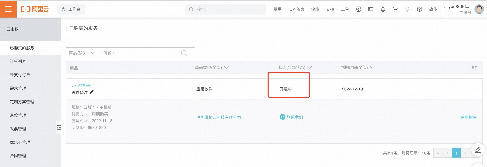
7. 选择立即进入计算巢部署 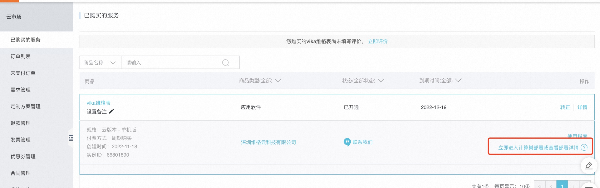
8. 将计算巢状态点击部署，手动部署 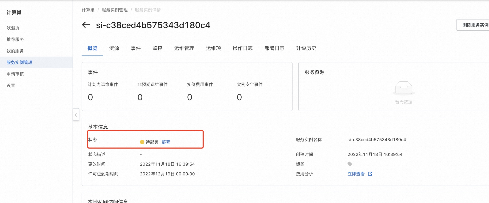 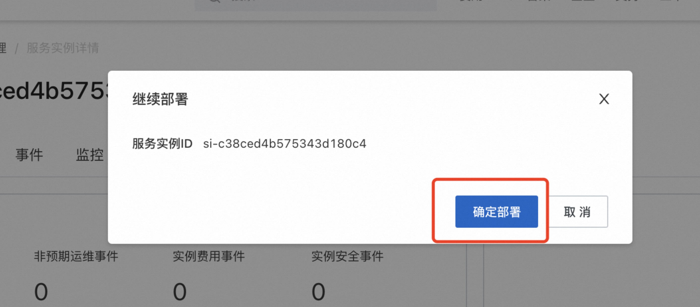
9. 等待部署状态显示已部署 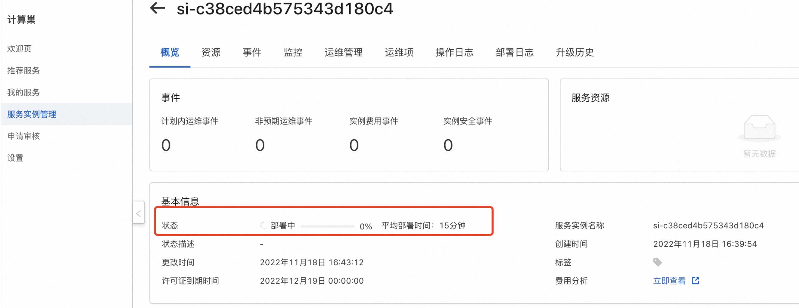
10. 点击url，即可跳转至产品页面 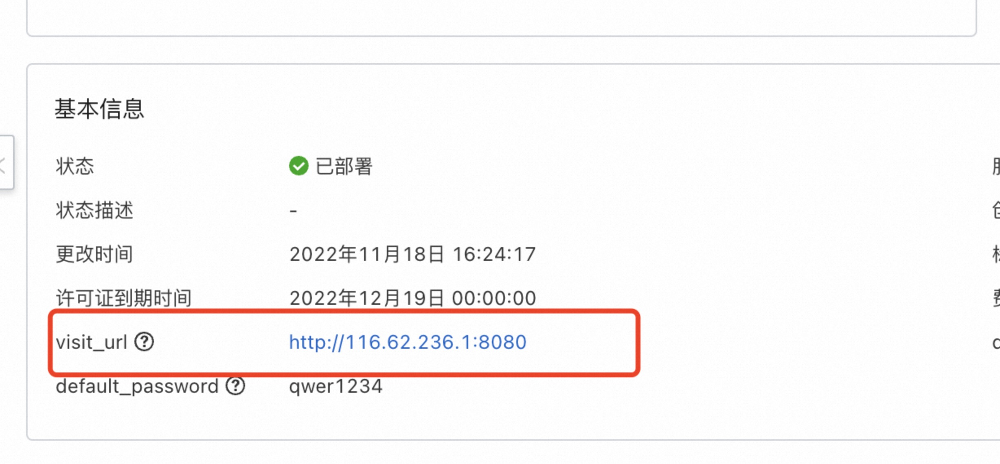
11. 开启vika之旅 🥳 手机号/邮箱等登陆方式注册登陆即可开始你的vika之旅 👏 👏 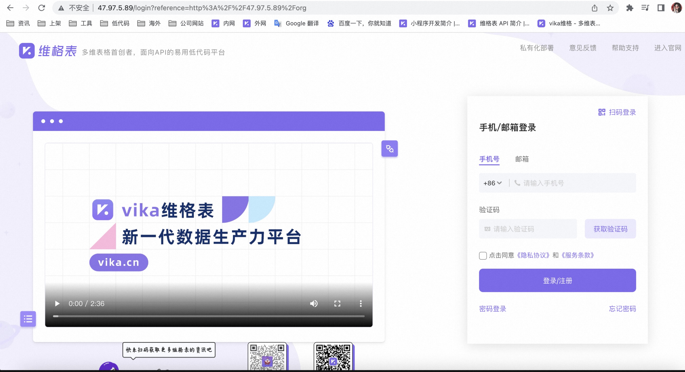 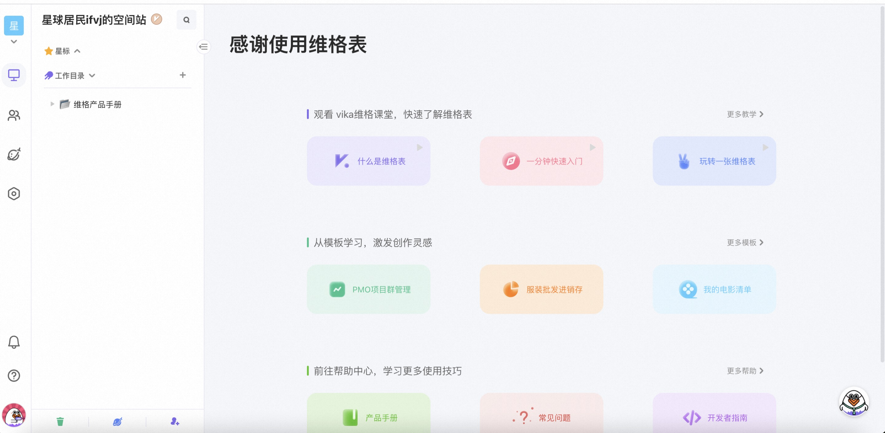
注意： 通过阿里云市场进入的试用部署，产品可以免费试用，但是云资源费用需要正常支付，到期后可以正常续费，数据不会丢失。
通过计算巢页面进入的试用链接，产品 + 云资源均不需要付费，但是到期后，资源会被释放，数据不会被保留。不建议您在试用阶段存放重要业务数据到维格表！
如何联系我们
如果您在安装或使用过程中，遇到任何问题，请发送邮件至 👉 devops@vikadata.com ，我们的工程师会尽快回复邮件，解决您的问题。